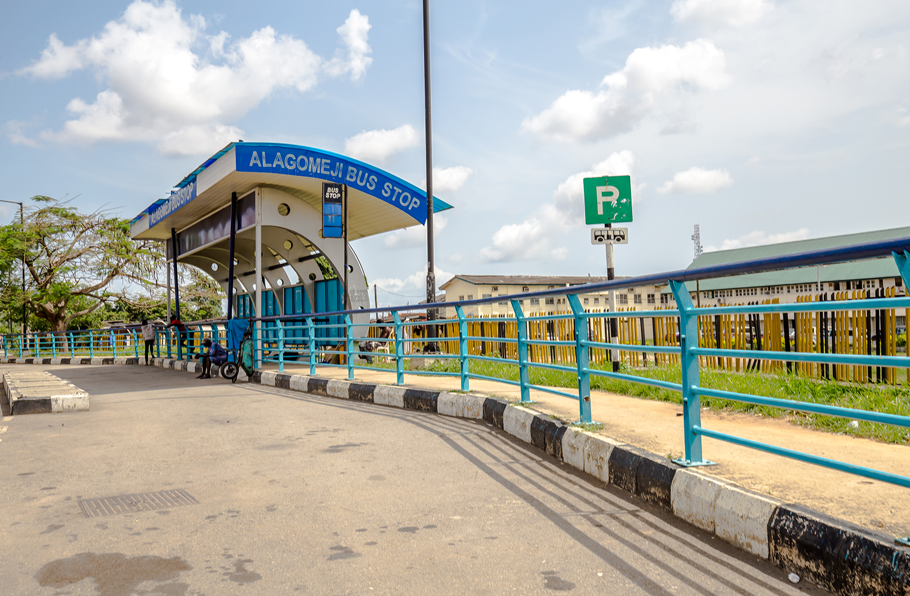
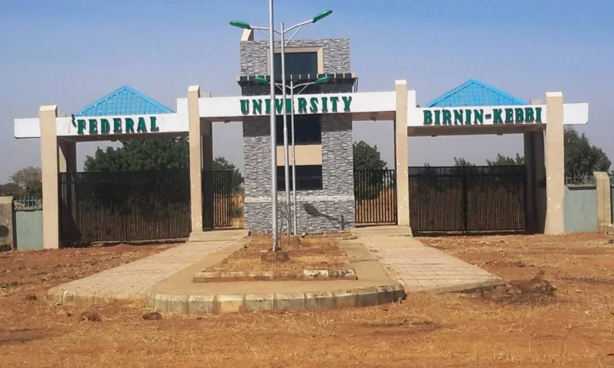
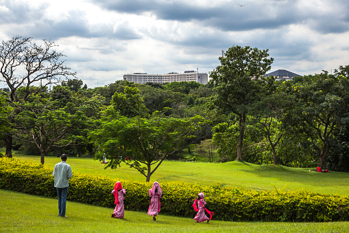
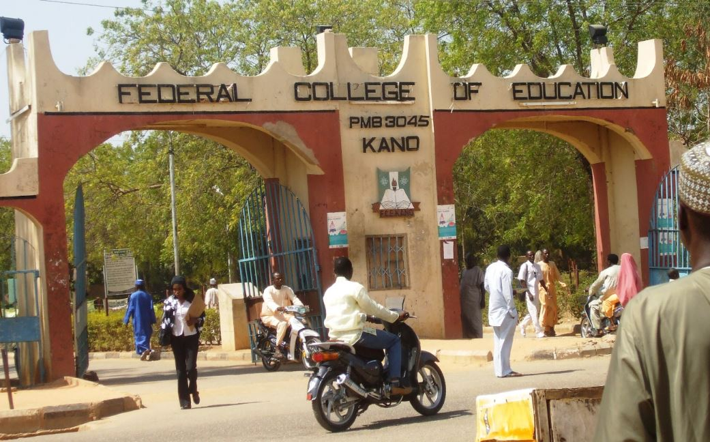
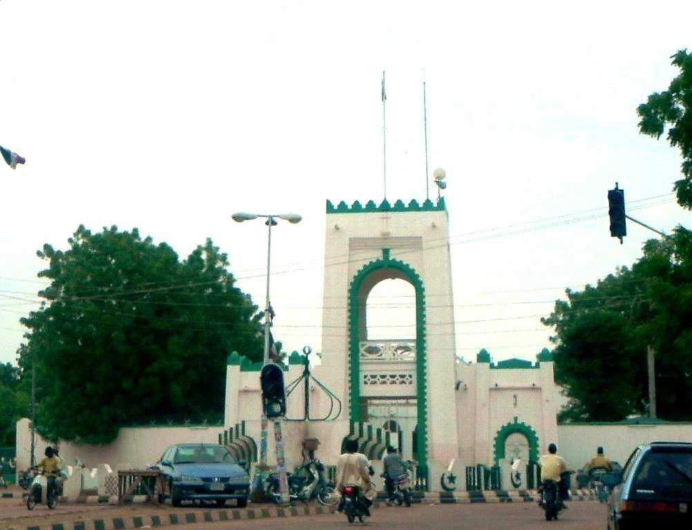

| destination | location | image |
|---|---|---|
| lagos state | alagomeji yaba |  |
| kebbi state | federal university birninkebbi |  |
| abuja | mellenium park |  |
| kano state | f.c.e kabuga |  |
| sokoto state | sultan palace hall sokoto |  |
| my one month holiday | ||
the resident of alagomeji vary as you are sure to see the working class,student and working expatriates in the area
federal university birnin kebbi is one of the university opened by former president good luck jonathan 2013 is based along kalgo bunza road f.u.b.k has different course they offer e.g mbbs,geology,political science,sociology...e.t.c
the mellenium park is the largest public park of abuja,the capital of nigeria is located in maitama districs of the city,mellenium park is known to be a very fun area to visit with families and freinds
federal college of education kano started from a very humble beginning in 1961 as kano mens training college at the native loan premises of gwale senior primary school before it moved to its permanent site in 1965 the school was establishes through the united agency for international aid(USAID)
the palace was build in 1808 the palace is a home to sultan of sokoto,the traditional and spiritual ruler of the sokoto caliphate who historically hold the most important muslim